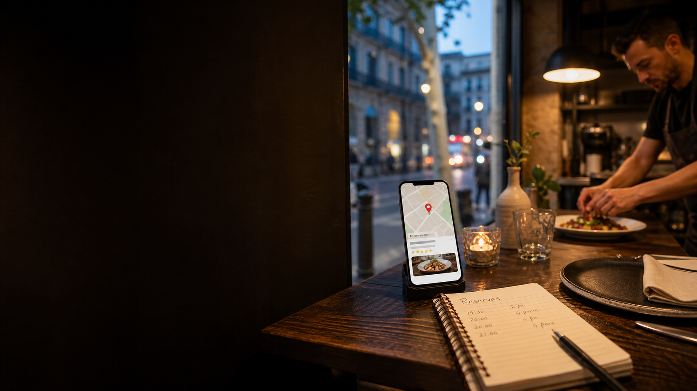

Optimització de fitxa
Categories, serveis, atributs, horaris, carta, reserves i descripció orientada a conversió.

Google Maps per restaurants
Una subscripció mensual perquè la fitxa del teu restaurant a Google Maps estigui activa, cuidada i orientada a generar trucades, indicacions i reserves.
El problema
Cada dia, clients que ja tenen intenció de menjar comparen restaurants a Google Maps. Si la teva fitxa sembla abandonada, respon poc o no explica per què reservar, el clic se'n va a un competidor.
El servei
Molts restaurants depenen de Google Maps, pero tenen fotos antigues, ressenyes sense resposta, horaris especials sense cuidar i cap rutina de publicacio. Apareix converteix aquest canal en una operacio mensual.
Auditoria inicial de la fitxa i competidors propers.
Optimitzacio de dades publiques, descripcio, serveis i conversio.
Posts setmanals adaptats a carta, temporada i reserves.
Seguiment de ressenyes i respostes suggerides amb to de marca.
Serveis
Categories, serveis, atributs, horaris, carta, reserves i descripció orientada a conversió.
Cerques locals prioritàries, competidors del barri i oportunitats per aparèixer millor.
Contingut sobre menú, plats, temporada, ressenyes, terrassa, reserves o grups.
Accions fetes, evolució de ressenyes, clics, trucades, indicacions i properes millores.
Respostes suggerides i criteris per separar positives, neutres i negatives delicades.
Seguiment de restaurants propers per detectar diferències en fotos, rating, posts i proposta.
Com funciona
Revisem fitxa, fotos, categories, carta, ressenyes, competidors i punts de conversio.
Prioritzem canvis simples que milloren presencia, confianca i claredat per clients locals.
Preparem contingut setmanal per menu, plats, reserves, promocions o moments de temporada.
Enviem un PDF mensual amb accions fetes, evolucio i recomanacions concretes.
Preu únic
Sense paquets confusos ni pressupostos eterns. Apareix és una subscripció clara per mantenir la fitxa activa, respondre millor i entendre què està passant cada mes.
Garantia
Documentem la situació inicial, executem la rutina i comparem evolució de fitxa, ressenyes, posts i accions locals. No prometem una posició concreta a Google Maps; prometem una operació clara i mesurable.
Activar ApareixPer qui es
Locals amb decisio rapida i marge per invertir en creixement local.
Negocis on una taula extra al mes ja pot cobrir el servei.
30+ ressenyes, fotos millorables i activitat irregular a Google.
Començar
Envia la fitxa del restaurant i preparem l'alta: revisió inicial, accés a la fitxa, primer calendari de posts i rutina mensual.
Recursos
Articles pensats per propietaris i gerents que volen entendre com treballar fitxa, ressenyes, posts i metriques locals.